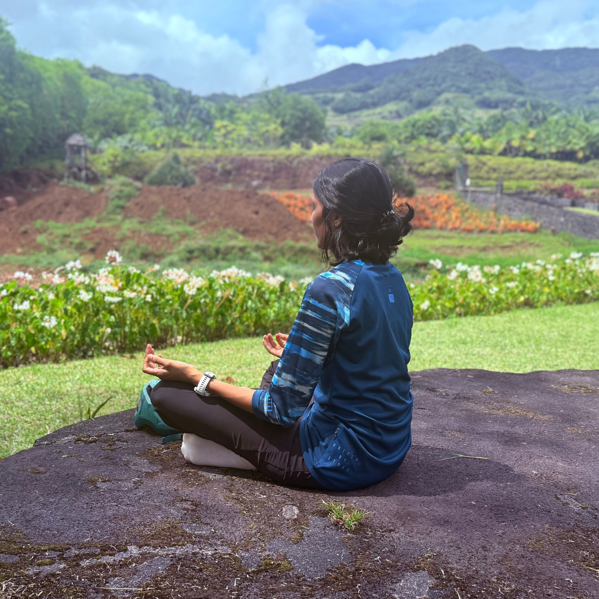

You have tried the plans, the resets, and the fresh starts. The problem is not information or discipline. There is a missing piece in the pattern. Finding it is where everything changes.
Book Your Food Clarity CallWe spend 45 minutes looking at what is really happening between you and food. Together we identify the patterns keeping you stuck and the next step that makes the most sense for you.
Book Your Food Clarity Call"Even if we never work together, you will leave this call with something useful."

As a martial artist and fitness professional, I knew exactly what healthy habits looked like. What I did not realise was that understanding food and feeling at peace with food are two completely different things.
The eating was never the problem. I was never dealing with the real one.
Nutria was built from that discovery.
Book Your Food Clarity Call